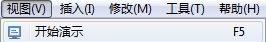
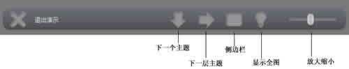
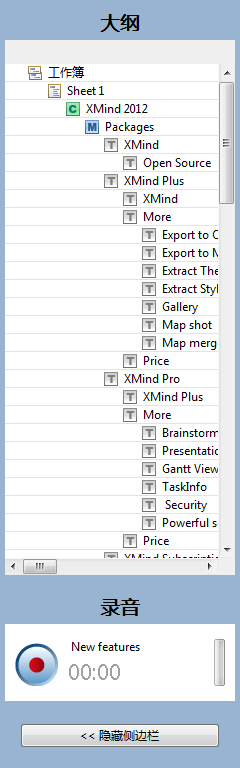

在XMIND的演示模式中，当前思维图会以全屏的形式展现在您的电脑屏幕上，同时，只有被选中的主题才会在屏幕中央高亮显示出来。您可以使用快捷键来完成全部的操作，如查看、浏览、编辑等等。方法如下：
您有两种方法启动演示：
- 打开图之后在菜单栏选择“查看 - 演示”。
- 或者直接使用快捷键“F5”。
按照下列方法浏览主题：
-
使用“Enter”和“Tab”：
- Enter键能够让您依次浏览同级主题。
- Tab键能够让您逐级浏览主题。
-
使用方向键：
- 使用上下键浏览浏览同级主题。
- 使用左右键浏览子主题或者父主题。
- 使用空格键：空格键可以让我们逐个浏览所有主题。
-
使用大纲：
- 通过底部的按钮条打开侧边栏；
- 在大纲视图中选择您希望展示的主题；
- 被选中的主题会高亮显示在屏幕的中央。
注意：
- 在您进入演示的时候，系统会自动浮现一个使用提示：按空格键浏览主题， 或者尝试 Tab/Enter。 您可以在”窗口 > 首选项 > 外框”中选择是否显示。
- 所有被选中的主题都会被高亮显示在屏幕的中央。
-
如果当前选中的是中心主题，前述的快捷键会有些不同的用法：
- 点击Enter键移动到第一个分支主题；
- 点击空格键移动到第一个分支主题；
- 点击上下方向键移动到自由主题（如果有自由主题）。
按照下列方式打开控制板：
- 进入演示模式；
- 将鼠标移动到屏幕底部，控制板即自动出现；
-
控制板上有六个不同作用的按钮：
- 退出：点击退出演示状态。
- 下一条：点击查看下一个同级主题。
- 深入：点击查看子主题。
- 侧边栏：点击打开/隐藏侧边栏。
- 编辑/查看：点击确认当前图是否可修改。
- 放大缩小：移动放大缩小图。

演示中侧边栏的使用：
- 通过控制板打开侧边栏；
-
侧边栏中有三个视图和一个按钮：
- 大纲视图：您可以在这里直接点击主题，屏幕上会在中央高亮显示选中的主题。
- 录音视图：点击开始按钮即可开始录音，停止后，录音文件会保存为当前主题的子主题。
- 隐藏侧边栏：点击隐藏此侧边栏。

按照下列方法退出演示：
- 在控制板中点击“退出”。
- 或者直接点击“Esc”。
您可能还对下列内容感兴趣……